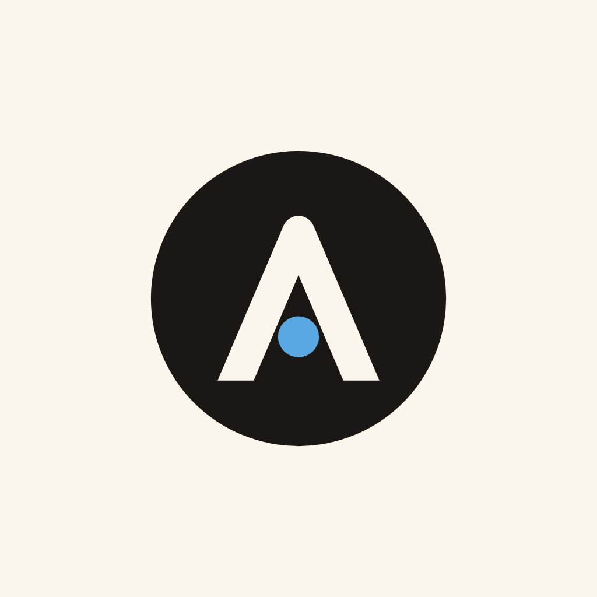
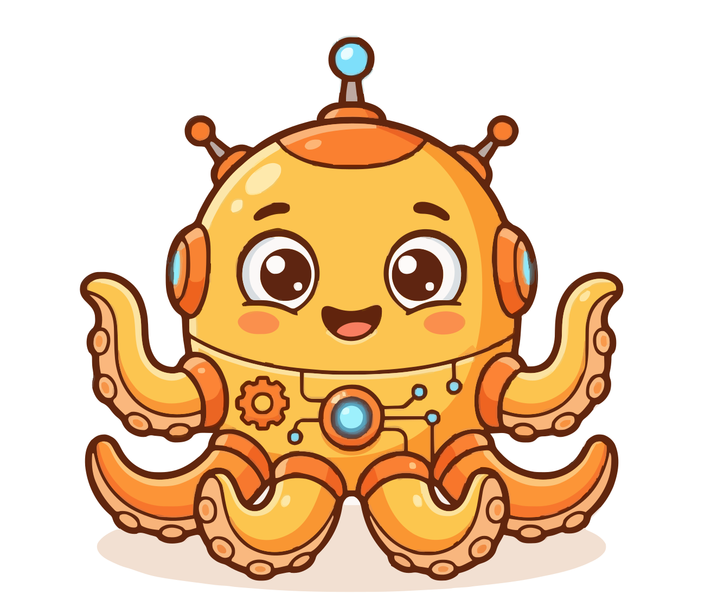

OpenAgentdThe coding agent that shows its work.
A local-first desktop app for coding agents. Every step, diff and token in view, on your machine.
macOSWindowsLinuxiOSAndroid


OpenAgentdA local-first desktop app for coding agents. Every step, diff and token in view, on your machine.
